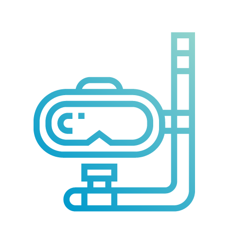
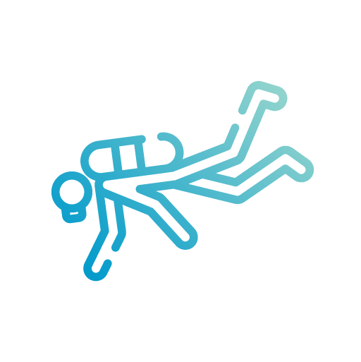
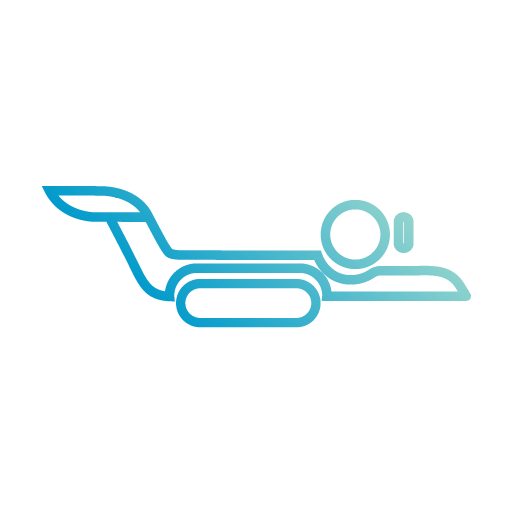

Open Water Diver
Formación inicial para bucear de forma autónoma y con total libertad, adquiriendo todos los conocimientos necesarios (teóricos y prácticos) para disfrutar de la que probablemente será la mejor experiencia de tu vida!

Advanced Open Water
Convertirse en buceador avanzado supone ser un experto en los diferentes entornos de buceo, además de ampliar tus habilidades y conocimientos contando siempre con la ayuda de tu instructor, el mismo que te guiará hacia una técnica depurada y eficaz, por encima siempre de los estándares requeridos.

Divemaster
Nivel de formación orientado a todo aquel que quiera iniciarse en el mundo del buceo como profesional. Podrás trabajar como guía local de buceo o colaborando en la formación de nuevos buceadores junto a un instructor. Pudiendo ser esta tu primera aventura en los niveles profesionales del buceo recreativo.